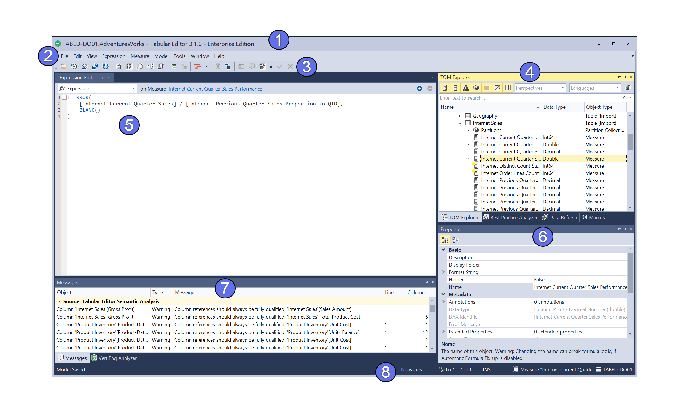

Tabular adalah antarmuka modern untuk mengelola semua jenis database. Ringan, cepat, dan powerful.
Coba Sekarang PostgreSQL, MySQL, SQLite, dan lainnya dalam satu aplikasi.
Dark mode, tab UI, dan desain intuitif.
Query editor dengan highlight, autocomplete, dan history.
UI yang lengkap dan siap pakai.
Semua koneksi diamankan dengan enkripsi TLS/SSL.
Berjalan di sistem native untuk performa maksimal.
Panduan terperinci dan tutorial langkah demi langkah.
Bergabung dalam komunitas aktif untuk berbagi dan belajar.
Tersedia bagi pengguna premium dan enterprise.
Beberapa modul tersedia secara terbuka di GitHub untuk kontribusi komunitas.
Versi premium dengan fitur lanjutan dan dukungan teknis.
"Tabular sangat cepat dan nyaman, lebih baik dari tools lainnya."
- Ardi, Developer Backend
"Tampilan modernnya bikin betah ngoding seharian."
- Davin, Data Analyst
Alamat: Jl. Kby. Lama No.6, Jakarta Selatan
Telp: 021-12345678
Email: support@tabular.id
Facebook: facebook.com/tabularid
X (Twitter): x.com/tabularid